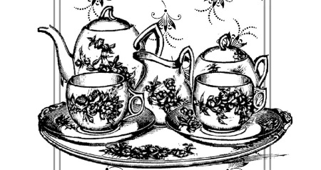

Шоколадная диета .

Многие из жителей нашей страны, да и всего мира, сталкиваются с проблемой лишнего веса. Ранее мы рассматривали воздействие продуктов с использованием какао-бобов на кожу и борьбу шоколадной косметикой с целлюлитом, и борьбу весьма успешную. Но не только этим, оказывается, славен шоколад. Небольшие сладкие плитки могут быть весьма важными в диетическом питании, как бы эта мысль ни казалась многим неправдоподобной. Попробуем разобраться в полезных свойствах шоколадной диеты.
В некоторых изданиях, посвященных диетам и оздоровлению организма, часто пишут о том, что несколько кусочков шоколада достаточно для того, чтобы избавить человека от состояния депрессии, вернуть ему радость и помочь бороться с накопившейся усталостью. Но иногда съеденная очередная плитка шоколада вызывала тревогу: «Столько калорий?», и эта простая мысль порождала раздумья и тревогу о своем здоровье.
Ученые из Германии пришли к выводу, что флавониды, находящиеся в шоколаде, поглощают ультрафиолетовое излучение, которое помогает увеличить приток крови и защитить кожу от солнечного света, в конечном счете улучшающее ее внешний вид.

Но с шоколадом не все так просто. Давно известно, что 50 граммов темного шоколада содержит больше антиоксидантов, чем бокал красного вина. А гликемический индекс продуктов из какао-бобов довольно низкий – сахар повышается в нашей крови медленно. Даже у хлопьев для завтрака и хлеба гликемический индекс выше, не говоря уже о печенье и сладких кондитерских изделиях. Мы уже убедились ранее, что шоколад содержит массу полезных витаминов и минералов, а жиры, входящие в состав какао-бобов, не вредны для нашего организма и не влияют на уровень холестерина в крови. Известно, что присутствующий в шоколаде хром способствует правильной работе жирового обмена и регулирует уровень сахара.
Выше я уже писал о том, что аромат темного шоколада подавляет чувство голода, а его употребление перед обедом в небольшом количестве приведет к уменьшению общего объема пищи: мы съедим меньше, чем обычно. Это первый кирпичик шоколадной диеты. Шоколад может стать не просто заменой обычного десерта, но и неким блюдом, предваряющим сам обед, причем количество необходимое для этого, весьма и весьма мало – пара долек от плитки.
Вы поставили перед собой задачу сбросить лишние килограммы, накопленные годами. Как это произошло и почему, мы не будем выяснять в данной книге. Сегодня наша задача – познакомиться с шоколадной диетой. Любая борьба с лишним весом строится на трех основных фундаментах:
– диета и контроль за количеством калорий;
– физическая нагрузка (фитнес);
– психологический самотренинг (тренинг).
В этом списке последняя составляющая —
психологический самотренинг, но его, конечно, нужно поставить на первое место. Это, проще говоря, та решимость, с которой вы приступили наконец к борьбе с лишним весом и тем самым сильно изменили свой образ жизни. Без хорошей внутренней работы начать заниматься спортом и правильно питаться практически невозможно. Иногда человеку требуется участие психолога, просто друга или испытание шоковой ситуацией – то есть внешним воздействием, после которого он также решается на новую жизнь.
Основная задача любой диеты – уменьшить количество калорий, поступающих с пищей. Этот недостаток покрывается за счет жировых запасов – сам организм начинает регулировать их количество. Тут нужно помнить, что в этом процессе участвуют жировые клетки всего тела и вы постепенно уменьшаетесь в объемах во всех местах, а не только в тех, что наиболее пострадали от калорийного питания. Сжигание лишнего жира высвобождает необходимую организму и, прежде всего мозгу, глюкозу, часть которой мы уже получили от пищи, недостаток которой и призвал организм использовать старые запасы на наших боках, бедрах и животе.
Производство шоколада имеет такую значимость для индонезийских фермеров, занимающихся выращиванием какао, что они построили статую-памятник в виде пары рук, которые держат стручок какао-дерева.

Физические нагрузки, а наилучшим будет выделение одного дня для полноценной тренировки, помогают усилить высвобождение глюкозы для мышц, подвергающихся нагрузкам. Для начала возьмите за правило ходить пешком, если место назначения расположено не далее двух километров. Купите шагомер и установите себе норму в 10 тысяч шагов в день, строго выполняя это решение. Даже в офисе лишние походы за документами будут накидывать на шагомер важные для вас цифры.
Но вернемся к диете. Установлено, что богатый магнием темный шоколад подавляет аппетит, а потому является отличным продуктом для снижения веса. Для начала вам нужно уменьшить размер вашей обычной порции хотя бы на четверть и завести на кухне весы. Взвешивая каждый раз то, что вы собираетесь съесть, вам следует записывать калорийность блюд. Общее число «доступных» в течение дня для вас калорий не должно превышать 1800–2200 в день для женщин и 2200–2500 для мужчин. Полезны в этом плане онлайн-дневники в Интернете, например бесплатный сайт www. dietaonline.ru, где вы сможете в готовых формах записывать калорийность блюд, устанавливать себе планы по занятиям фитнесом, контролировать вес и вести свой блог на эту тему. Подсчет калорийности на время проведения диеты должен стать привычкой.
Важным фактором является время принятия той или иной пищи. Как установили американские исследователи, завтрак с высоким содержанием жиров и обед с их низким содержанием способствуют хорошей работе организма по расщеплению жиров, при питании в таком порядке ваш организм будет забирать лишний жир и из подкожных отложений. Вопрос с ужином довольно прост – большинство диет напрямую запрещает позднее поглощение пищи, что косвенно подтверждается специалистами по особенностям питания. Но если вы ограничите после 18.00 употребление углеводов, вернее продуктов с их высоким содержанием, то этого будет достаточно для полноценного диетического питания.
Для углеводов самое лучшее время – утро, поэтому введите за правило плотно завтракать, ведь множественные исследования говорят о том, что те, кто много ест утром, как правило, не имеют проблем с лишним весом. Этому правилу уже много лет, и оно хорошо проверено временем. Дневной рацион должен в большей степени состоять из белка, так как высокоуглеводная пища вызывает сонливость и вялость во второй половине дня. Это актуально для людей с низкой и средней физической нагрузкой. Конечно, если вы каменщик и после обеда активно выкладываете кирпичную стенку, то вялость вам не грозит, а обеда вместе с завтраком будет даже мало для восполнения затраченных калорий.
Маршалл Филд в 2002 году изготовил самую большую коробку шоколада. В ней уместилось более 90 000 мятных конфет Frango, и весили они около 1,5 тонн.
На ужин ешьте меньше всего, исключив продукты с высоким содержанием углеводов. Это могут быть овощи, не очень сладкие фрукты, постное мясо птицы, немного орехов и, конечно, горький шоколад. Запомните, прием пищи в течение дня должен идти по нисходящей линии как в плане количества, так и в плане насыщенности ее углеводами и жирами. Прекрасным завершением дня могут стать клубника или мандарины, политые растопленным горьким шоколадом. Это лакомство можно употреблять как в горячем, так и в холодном виде и получить настоящее удовольствие и огромную порцию полезных организму веществ.
Нужно помнить, что поддержание оптимального веса связано с количеством пищи, употребленной вами за день, и количеством энергии, потраченной за истекшие сутки. Баланс между этими двумя составляющими и должен стать вашей основной задачей, особенно после того, как вы избавились от лишних килограммов.
Знакомство с калорийностью продуктов и подсчет калорий очень полезны для регулирования потребления высококалорийных продуктов. Выбирая, что съесть в обед, вы сможете четко отдать предпочтение овощному салату с белым мясом, а не жирной отбивной или пицце, ведь ваша задача – не выйти за установленные рамки калорийности. Учитывая состав продуктов, вы сможете отсеивать те из них, которые произведены с использованием искусственных добавок или сильно переработанных продуктов. Следует избегать полуфабрикатов, за исключением, конечно, овощных смесей и замороженной продукции.
Устойчивый миф относит заморозку к нездоровой пище, что категорически не соответствует действительности. Нужно понимать, что заморозка овощей, фруктов и ягод производится сразу после сбора урожая, пока вся эта сельскохозяйственная продукция насыщена витаминами и микроэлементами и находится в хорошем состоянии. Низкие температуры не уничтожают полезные свойства клубники или цветной капусты, которые, в свою очередь, исчезают в процессе длительного хранения на складе. Так что смело покупайте замороженные овощи и фрукты. В том, что вам дала природа, есть еще одно важное преимущество – фрукты и овощи содержат большое количество воды, которая в процессе похудания замещает в организме часть пищи, способствуя уменьшению потребления твердой еды.
Безусловно, пить простую чистую воду вы можете без особых ограничений. Более того, во время программы похудания количество выпиваемой жидкости должно доходить до трех литров в день для женщин, а для мужчин и того больше. При этом необходимо индивидуально учитывать вес, возраст и состояние здоровья. С осторожностью пейте соки и лимонады. Соки сами по себе содержат большое число калорий, а лимонады, лучше употреблять те, что в своем составе не содержат сахар. Обычно они маркируются словом light. Чай, особенно зеленый, пейте спокойно – в нем нет калорий, хотя он оказывает на нервную систему возбуждающее действие, кофе стоит ограничить одной чашкой в день или заменить его напитком из корней цикория – превосходным природным антиоксидантом. К слову, употребление зеленого чая в количестве более трех чашек в день способствует улучшению жирового обмена в организме, препятствуя образованию нового жира. С зеленым чаем вы вновь худеете.
Результаты исследования в Университете Индианы показали, что велосипедисты, которые употребляли молочный шоколад, чувствовали меньшую усталость после тренировки и показывали результаты в испытаниях на выносливость намного выше, чем те, кто пил профессиональные спортивные напитки.

Молоко и какао мы все же отнесем к еде, а не напиткам, но их употребление, как и употребление всех молочных продуктов, должно быть для вас обязательным, если, конечно, ваш организм усваивает их. Кроме того, эти продукты имеют достаточно высокую калорийность. Так в 100 граммах шоколада более 500 килокалорий. А что такое 100 граммов – одна плитка, которую с легкостью вы съедите за чаем. В 100 граммах молока более 50 килокалорий, но в стакане этого продукта их уже почти 150. Конечно, кусочек темного шоколада, съеденный в течение дня, благотворно повлияет на ваше давление, защитит сердечно-сосудистую систему от инсультов и принесет вам радость. Оптимальное количество шоколада, доступное для человека без ущерба для нормального веса, – до 20 граммов. Немного, но питательно и полезно! Шоколад, съеденный перед завтраком, уменьшит аппетит и позволит вам принять меньше калорий с меньшим количеством еды. Более того, если есть возможность заменить утренний джем более полезным шоколадом, то сделайте это. Кстати, теобромин, содержащийся в шоколаде, способствует увеличению мышечной стимуляции и способствует снижению веса. Это вещество относится к числу сосудорасширяющих, что говорит о том, что оно снижает артериальное давление. Но и это еще не все. Известно, что многие горькие продукты помогают организму выделять гормоны холецистокинин и лептин, связанные с оценкой сытости. Эти гормоны отодвигают чувство голода, и мы дольше не хотим есть. Следовательно, при меньшем потреблении пищи мы будем худеть естественным способом. В этой связи горький шоколад остается наилучшим продуктом в борьбе с лишними килограммами и в использовании собственных ресурсов организма, направленных на оптимизацию веса. То, что шоколад способствует выделению лептина, подавляющего аппетит, показали множество исследований последнего времени, проводимых в университетах и клиниках США.
Есть хороший рецепт, подходящий для завтрака. Испеките несколько тонких немасляных блинчиков, лучше из муки грубого помола. Смажьте их предварительно растопленным шоколадом. Готовый блинчик посыпьте измельченными орехами и мелко нарезанной клубникой и заверните его два или три раза. Вы получите не только сытный и вкусный, но и полезный во всех отношениях завтрак. Орехи лучше всего брать грецкие, но вы можете использовать те, что вы любите. То же самое можно сказать и о ягодах. Вместо клубники натрите яблоко и добавьте немного корицы. Такой блинчик запомнится вам надолго своим ароматом и вкусом.
При производстве белого шоколада НЕ используется какао в твердом виде. Добавляется только какао-масло.

Как мы уже отмечали, темный шоколад имеет низкий гликемический индекс и его включение в состав диеты оправдано во всех отношениях. Важно помнить, что продукты с высоким гликемическим индексом играют важную роль в наборе лишнего веса. К ним относятся белый хлеб и хлебобулочные изделия, печенье, картофель, обычный рис, зерновые завтраки. Поэтому в программе снижения веса следует обратить особе внимание на эти продукты, исключив или заменив их в своем рационе. Картофель лучше всего вымачивать в воде в течение 10–12 часов, простой рис заменить басмати, а белый хлеб – серым или черным. Ввести в каждодневный рацион яблоки, апельсины, орехи и шоколад. Кроме всего прочего, откажитесь от приправ и соусов, заменив их уксусом с небольшим количеством оливкового, кунжутного или тыквенного масла.
Хорошим дополнением к вашей диете будут БАДы с содержанием трав, подавляющих аппетит. Современная промышленность выпускает большое число добавок хорошего качества и действия. Это могут быть чаи, капсулы с измельченными растительными препаратами или жидкости, содержащие вытяжки и эссенции. Всегда можно с легкостью подобрать оптимальную программу помощи организму в борьбе с лишним весом, в основе которой будут биологически активные добавки. Не нужно пренебрегать вековым опытом наших предков, использовавших травы для лечения многих недугов. Для относительно здорового человека употребление БАДов не принесет вреда, но стимулирует защитные функции организма, повысит иммунитет и станет составной частью программы оздоровления. Для снижения веса рекомендуется употреблять БАДы с высоким содержанием хрома, в организме человека он участвует в расщеплении сахаров и углеводов. Современная пища содержит очень мало этого элемента, способствующего потере веса и росту мышечной массы. Обратите внимание, что хорошо усваиваются организмом только глюконат хрома или хром с ниацином, тогда как другие соединения этого элемента малоэффективны. Из натуральных продуктов большим содержанием хрома отличаются пивные дрожжи, злаки и, конечно, шоколад, так что спокойно заменяйте один продукт другим для разнообразия, но принимайте их с постоянной регулярностью. Из растительных препаратов, способствующих лучшему расщеплению жиров, отметим зеленый чай и стевию – природный подсластитель. Кроме того, полезно заменить сахар медом.
Однажды английские пираты захватили испанский корабль с грузом какао-бобов на борту. Не обнаружив ничего ценного, пираты подожгли судно, решив, что поживиться нечем, а бобы – это овечий помет.

Мы уже несколько раз упоминали о том, что небольшие порции шоколада не только порадуют вас своим вкусом и ароматом, но и уменьшат аппетит, тем самым помогая в трудной борьбе с лишними килограммами. Не все в это верят, а зря. В течение дня мы не раз пьем чай и едим небольшие десерты, печенье или иные сладкие изделия из муки. Но представьте, что калорийность этих продуктов сравнима с калорийностью шоколада, который:
1. Имеет знакомый приятный вкус.
2. Уменьшает аппетит.
3. Содержит массу полезных элементов.
4. В количественном отношении менее калориен.
Поэтому, когда вы берете печенье, подумайте, что меньшее количество шоколада несравнимо более полезно для вас и вашего организма, и сделайте правильный выбор, взяв три-четыре дольки от шоколадной плитки. Воздержитесь от десерта, съешьте несколько кусочков темного шоколада общим весом не более 20 граммов, и вы реально повлияете на свои лишние килограммы. Но, выбирая продукцию из какао-бобов, отдавайте предпочтение тому шоколаду, в котором доля какао составляет 50 % и более. Молочный шоколад употребляйте только в крайнем случае, при отсутствии темного. И конечно, никогда не покупайте продукцию, в составе которой присутвуют растительные масла – это не шоколад, а его имитация. Он не несет никакой пользы и только дискредитирует натуральный шоколад.
В завершение разговора о правильном питании при борьбе с ожирением отметим следующее. Я не сторонник вегетарианства, сыроедения, диеты с низким содержанием жиров и других модных увлечений. Конечно, в вашем рационе должно быть много овощей и фруктов, но ешьте мясо – нежирное, лучше куриное. Обязательно ешьте рыбу, яйца и пейте цельное коровье молоко – важный и нужный продукт. Нет ничего плохого, если вы будете регулярно употреблять сырые фрукты и овощи, избегать жирных продуктов. Все это, естественно, полезно для вашего организма. Но все это хорошо лишь при комплексном подходе, когда разнообразие ставится во главу угла, а не мода или ваши заблуждения. Нельзя зацикливаться на определенной диете. Недавно ученые Дикинского университета установили, что любители диет обычно быстро набирают лишние килограммы. Введите лишь небольшие изменения в свой рацион, считайте калории и ешьте большую часть того, что привыкли есть, употребляйте шоколад, мед и другие натуральные сладости – радуйте себя чаще! Вам придется отказаться от немногого, но алкоголь входит в число таких запретов. Когда вам говорят, что небольшое количество вина спасает от сердечно-сосудистых заболеваний, смело возражайте им и говорите, что для этого природа создала какао-бобы. Если вы не хотите отказываться от спиртных напитков, то выберите вместо ликера красное вино, а вместо вина легкое пиво. Разбавляйте крепкий алкоголь, делайте коктейли. Чем меньше градусов будет в вашем напитке, тем лучше.
При контроле над питанием обязательно ведите дневник, где указывайте не только каждодневное меню, количество калорий, жиров, белков и углеводов, но и свои спортивные успехи. Как я отмечал ранее, для ведения такого дневника можно воспользоваться услугами специальных сайтов, предоставляющих это в режиме онлайн.
Разобравшись с питанием, пару слов скажем о фитнесе или любой другой физической нагрузке, как одной из составляющей программы похудания. На первом этапе вашей задачей является увеличение количества потребляемых телом калорий при уменьшении поступления их с пищей. Проще говоря, для нормальной жизнедеятельности ваш организм использует свои жировые запасы. Но на втором этапе вы должны будете сохранять баланс между поступившими калориями и потраченными, то есть следить за постоянством своего веса, ведь лишнего жира уже нет, а для жизни вы тратите столько калорий, сколько приходит с пищей. Как в первом случае, так и во втором вам помогут физические упражнения. Обязательна кардионагрузка, при которой интенсивно сжигаются калории. Также для интенсификации обмена веществ позаботьтесь об увеличении мышечной массы. За счет возросшего метаболизма увеличенная мышечная масса позволит вам быстрее сжигать жир, даже во время отдыха после тренировок. Ко всему прочему, физические нагрузки упорядочивают работу поджелудочной железы, печени и других органов, связанных с системой накопления жира в организме. Так как шоколад содержит серотонин, дофамин и триптофан – природные нейротрансмиттеры, влияющие на настроение и энергию, то его потребление во время тренировок не только улучшит настроение, но и позволит бороться с депрессией и плохим настроением.
Любовница Людовика XV мадам де Помпадур была большой любительницей шоколада и использовала его для лечения своей сексуальной дисфункции. Маркиз де Сад также был одержим шоколадом…

Часто бывает трудно приступить к физическим упражнениям, что-то мешает. Но съешьте кусочек шоколадки, и хорошее настроение придаст вам силы и обеспечит благоприятный настрой на занятия как спортом, так и другими полезными делами. Кроме того, вещества, содержащиеся в шоколаде, подавляют аппетит, что в борьбе с лишним весом весьма актуально.
Из какао-порошка вы можете сделать свой полезный энергетический напиток, богатый актиоксидантами. На стакан молока (жирность молока вы выбираете по своему усмотрению) берется полстакана черники и полстакана клубники. Ягоды могут быть как свежие, так и замороженные. Второй вариант даже предпочтительнее – замороженные ягоды в большей степени сохранили свой витаминный состав. Молоко и ягоды помещаются в блендер или шейкер, куда можно добавить и половинку банана. Перед началом перемешивания добавьте в молоко чайную ложку какао-порошка и включите прибор. После тщательного перемешивания шоколадный энергетический напиток готов. В качестве дополнительного ингредиента может выступать мед, но это уже решать лично вам.
В приложении II вы найдете ряд несложных кулинарных рецептов блюд из сырых какао-бобов, какао-масла и какао-порошка.
